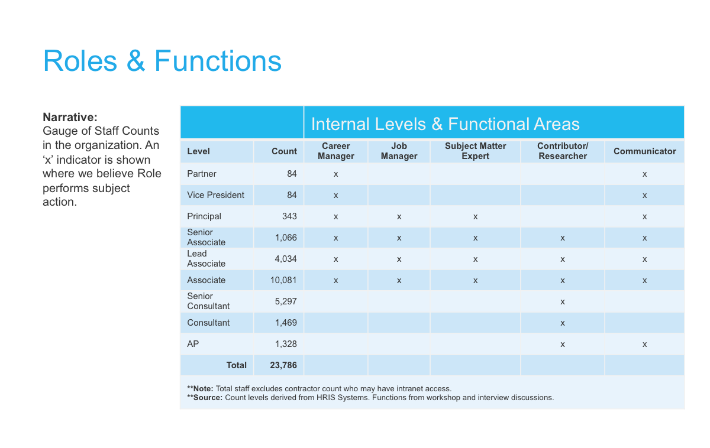

- Date: January 2015
- Roles: Engage, Analyze, Design, Build
- Tools: Axure, Sharepoint, Microsoft Office 365 Suite, Adobe CC

" Application (Intranet) "
The engagement from Booz Allen Hamilton (BAH) was to envision and build a SharePoint Intranet to replace their existing platform, which did not promote a rich and complete user experience. The issues spanned a target audience of over 23,000 employees across 12 countries. The nine user types that segmented the workers changed continuously within a fluid organizational structure. My team’s distinctive challenges were
The suggestion was to release a minimum viable product for the initial launch date. The approach would support a successful deployment and allow for first-hand user feedback.
Over a six month period, the team would focus on architecting a ‘responsive/adaptive’ design that allowed for scalability within the Microsoft Azure and SharePoint platforms. The outcome would be a clean, modern interface optimized for touch and worked smoothly across mobile devices.
Following a six (6) step process - "engagement, analyzing, design, building, deployment & governance", we conducted several workshops with Booz Allen Hamilton, connecting with Intranet Stakeholders and project sponsors to understand their needs, as well as formulate ideas around crafting a user-centric SharePoint Intranet solution.
The Booz Allen Hamilton team defined some success criteria in response to our interviews and game storming exercises. These measures focused the design efforts, guided our decisions and ensured that both teams kept working towards the same goals. The redesigned Intranet provided a uniform experience across mobile, tablet, and desktop devices. Different levels of user permissions/security were a major concern since a considerable portion of the content was of a sensitivity/classified nature.
The delivery model for the project consisted of six distinct phases. Individually each phase focused on separate goals and deliverables.
With herculean efforts from a knowledgeable, dedicated team within a tight iterative environment, we were capable of meeting deadlines and having a successful product launch. The responsive/adaptive design solution surpasses the client’s expectations when demonstrated within the clickable prototype. The immense technical efforts were no match for the competent development team who delivered a solid product with minor hiccups.